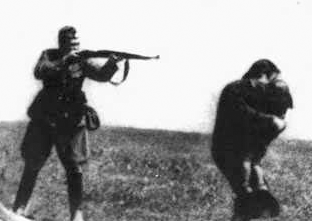
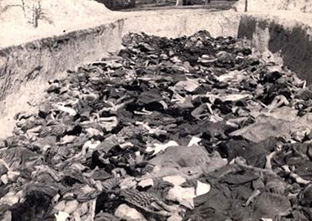
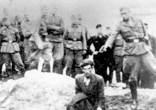

1941 - 1945
Escenarios de horror y exterminio
GRUPOS DE FUSILAMIENTO
Para Hitler, la invasión a la Unión Soviética constituía un nuevo paso en la ejecución de su plan destinado a proveer un “espacio vital” a la nación alemana y una oportunidad para destruir los males del Comunismo.
Los Einsatzgruppen,o grupos de fusilamiento, eran escuadrones itinerantes especiales que tenían órdenes de ejecutar a todos los judíos de la Unión Soviética. Los Einsatzgruppen estaban formados por miles de hombres: dos tercios de ellos poseían instrucción universitaria y aproximadamente la mitad tenía títulos de doctor en economía, leyes, ciencias políticas o filosofía.



Los grupos de fusilamiento capturaban a sus víctimas y las transportaban a zonas aisladas para matarlas. Los prisioneros eran obligados a entregar sus objetos de valor, a quitarse las ropas (no en todos los casos) y luego eran asesinados de un solo disparo o en fusilamientos masivos al borde de barrancos o de fosas comunes que ellos mismos habían sido obligados a excavar.
Se estima que los Einsatzgruppen, con el apoyo logístico del ejército alemán y la ayuda entusiasta de colaboradores locales, asesinaron aproximadamente 1.300.000 judíos, casi una cuarta parte de los que murieron en el Holocausto.